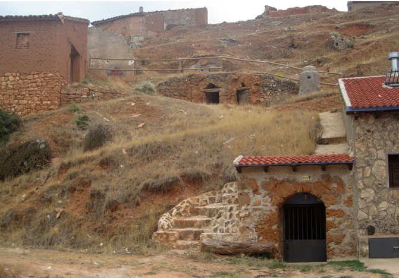

Catálogo
Catálogo Presentación
Localización
La bodegas con más de 250 años de antigüedad se encontraban excavadas a mano y orientas al norte para conservar temperatura y humedad.
Cada viticultor elaboraba su vino de forma artesanal, se pisaban las uvas, y con el raspón incluido se pasaban a fermentar. Desnudos se introducían en el lagar para remover el mosto y los orujos. Una vez acabada la fermentación se separaba el vino y se introducía en depósitos de cemento o toneles de cerezo de 600 hasta 1500 litros, el resto de orujos se prensaba en prensas manuales para extraer el vino.
Después venían los compradores y fijaban el precio por “cantarás”.
Así se funcionó hasta la creación de las Cooperativas allá por los años 50. Hoy en día son testimonio de la historia y la cultura del vino en nuestra zona.
Ctra. de Villaluenga, s/n · 50312 Cervera de la Cañada. Zaragoza
Tel. 976 899 206 · Fax 976 896 240
www.bodegassangregorio.com
La Bodega San Gregorio fue fundada en 1965 en Cervera de la Cañada y pertenece a la Denominación de Origen de Calatayud. En esta región, situada en las estribaciones del sistema Ibérico, es donde seleccionamos las mejores uvas del valle del Ribota, la zona más occidental de la denominación.
Carretera Nacional II, km 221 · 50220 Ateca. Zaragoza
Tel. 661 419 719
www.gilfamily.es
Bodegas Ateca tiene su base de operaciones en Ateca a 14 kilómetros de Calatayud.
El viñedo, plantado sobre suelos de pizarra en los parajes de mayor altitud de la zona está compuesto fundamentalmente por pequeñas parcelas de viñas viejas de la variedad garnacha (algunas de principios del Siglo XX) y se sitúa en torno a las laderas de los montes de Ateca y los pueblos de alrededor.
Ctra. Calatayud-Cariñena, km 16,4 · 50330 Miedes de Aragón. Zaragoza
Tel. 976 892 205 · Fax 976 890 540
www.san-alejandro.com
Fundada en 1962 con una superficie de viñedo aproximada de 1.000 has se encuentra en Miedes a 88 km al sudeste de Zaragoza.
De claro espíritu exportador y formada por un equipo joven y dinámico vende a más de 25 países el 95% de su producción bajo diferentes marcas, principalmente Baltasar Gracián, Las Rocas, Viñas de Miedes y Evodia.
Avda. de la Cooperativa 21-23 · 50310 Villarroya de la Sierra. Zaragoza
Tel. 976 899 015 · Fax 976 899 132
www.bodegavirgendelasierra.com
Bodega Cooperativa Virgen de la Sierra tiene el honor de ser una de las primeras Cooperativas de Aragón. Fundada en 1954, con el esfuerzo de muchos se consiguió levantar un edificio que representara no sólo las ganas de trabajar y de esfuerzo, sino el ánimo emprendedor para hacer algo nuevo, diferente…
Camino de Calatayud, s/n · 50293 Terrer. Zaragoza
Tel. 976 898 400 · Fax 976 898 401
www.valdepablo.com
Los orígenes de Bodegas Valdepablo se remontan al año 1928 cuando en Calatayud (Zaragoza) Juan Manuel Pablo fundó la bodega y comenzó así la andadura de una familia unida al mundo del vino.
Desde entonces, la familia Pablo, generación tras generación, ha ido transmitiendo el secreto de la elaboración de sus caldos y el amor al vino.
C. Las Tablas s/n · 50313 Aniñón. Zaragoza
Tel. 976 899 150 · Fax 976 896 160
www.satninojesus.com
La SAT 2563 Niño Jesus, creada en 1978 en Aniñón, se dedica dentro de la denominación de origen Calatayud a la elaboración de vinos de calidad, su variedad principal en uvas tintas es la garnacha, y en uvas blascas macabeo.
Los viñedos situados a una altitud de entre 650 y 880 m, con importantes diferencias térmicas entre el día y la noche, con pluviometría escasa y suelos pedregosos, nos permiten obtener vinos de gran calidad.